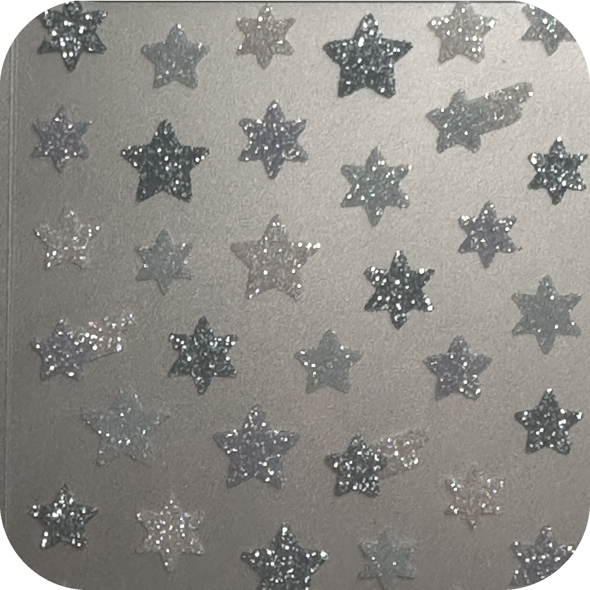
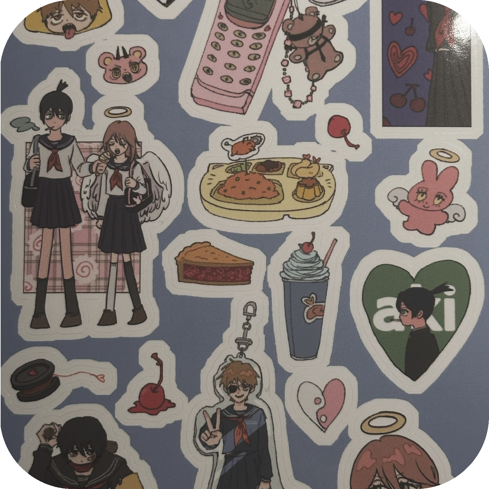
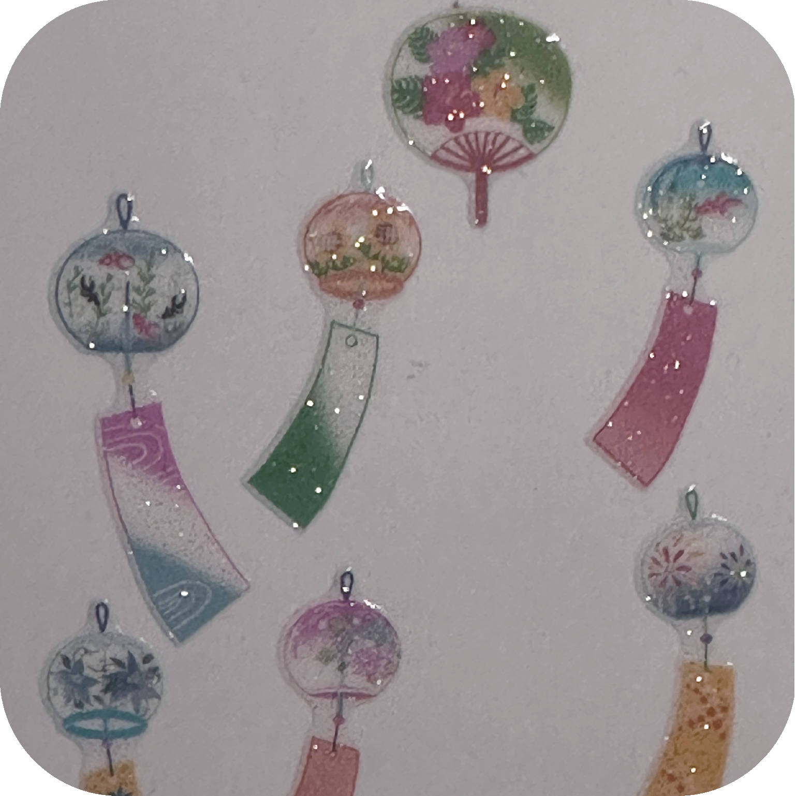
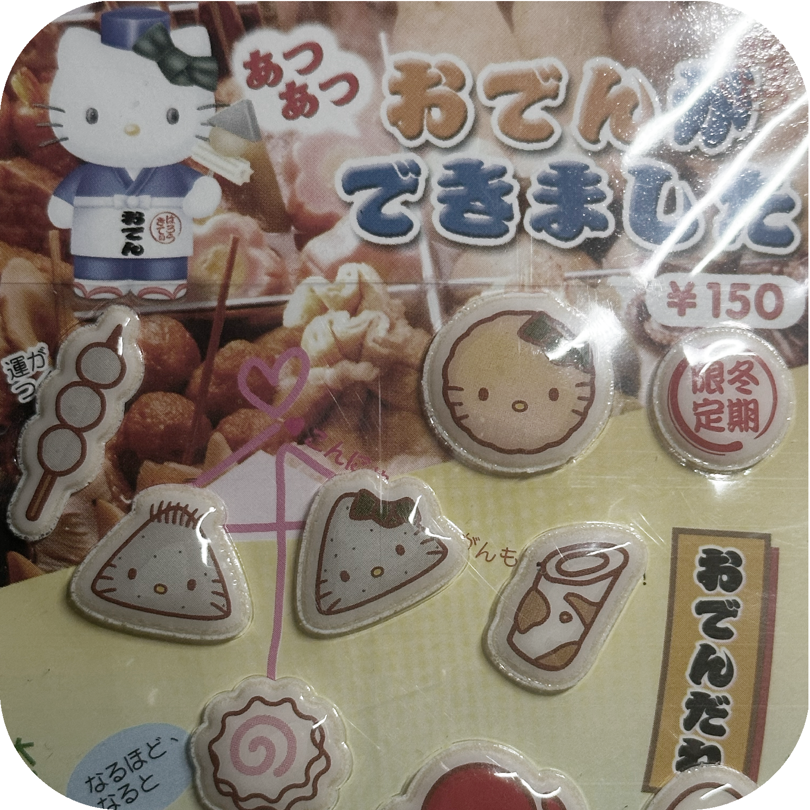

|  | Mindwave Star Glitter Sticker 평소에 가장 자주 사용하는 스티커이다. 첫 일본 여행 갔을 때 한 장에 250엔에 사왔었는데, 별 모양인데다가 작고 반짝여서 다양한 곳에 붙이기 좋아 손이 자주 간다. 이번에 오사카 다녀오면서 10장 더 산 다이어리 애착 스티커 중 하나이다. The sticker that I most frequently use. On my first trip to Japan, I bought one for 250 yen. Because it is star shaped, small, and sparkly, it is good to use in various places, so I use it often. |  | @패스 Chainsawman Sticker 평소 좋아하는 작가분이 좋아하는 애니로 제작하신 2차 창작 스티커이다. 첫 번째 판매를 놓쳐서 인터넷에서 상당한 프리미엄을 붙이고 샀었다. 이후에 있었던 2차 판매에서는 파란색 버전과 핑크색 버전을 각 10장씩 구매할 만큼 정말 좋아하는 그림체의 스티커이다. This is a fan-made sticker of an anime that I like by a artist which I also very like. I missed the first sales and bought this with a huge amount of premium in the Internet. On the second sales, I bought 10 of each versions of this sticker. |
|
|  | Sticker Fun 風鈴 Set 일본에서 가장 흔하게 만날 수 있는 스티커 브랜드이다. 평소에 일본의 여름 감성을 좋아하는 편인데, 그 감성을 스티커에 담아 놓은 것 같은 느낌이라서 좋아한다. 여름 다이어리에는 무조건 붙이는 여름 필수 아이템이다. It is the most common sticker brand in Japan. I usually like the summer sentiment of Japan, so I like it because it feels like I put that feeling on a sticker. It is a must-have summer item for a summer diary. |
 | Hello Kitty 古典 おでん Sticker 다이어리를 쓰는 사람이라면 다들 고전 키티 스티커 한 장은 가지고 있다. 이 스티커는 일본의 중고거래 앱인 메루카리에서 여러 장 랜덤 세트 안에 있었던 스티커였는데, 처음 보자마자 너무 예뻐서 4년이 지난 지금까지 한 장도 못 사용하고 있다. Everyone who writes a diary has a classic kitty sticker. This sticker was inside a random set of several sheets on the Japanese secondhand trading app Mercari, but it was so pretty when I first saw it that I haven't used one until now, four years later. |